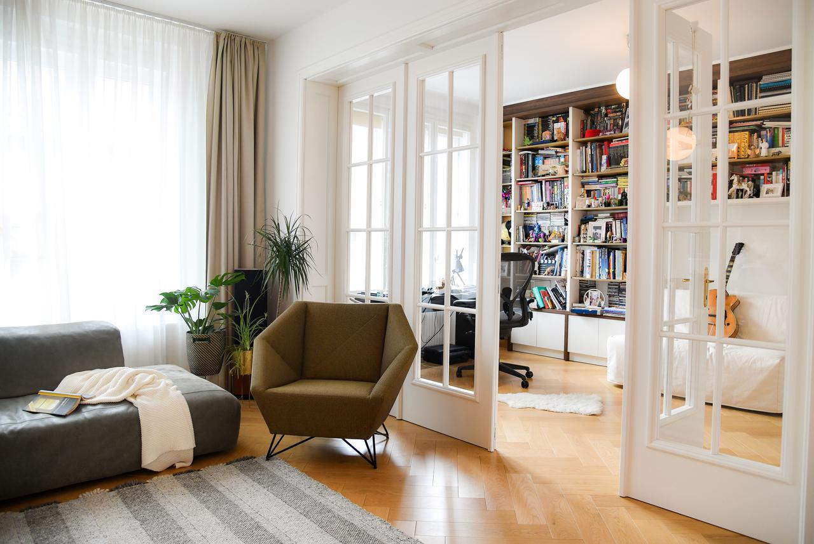
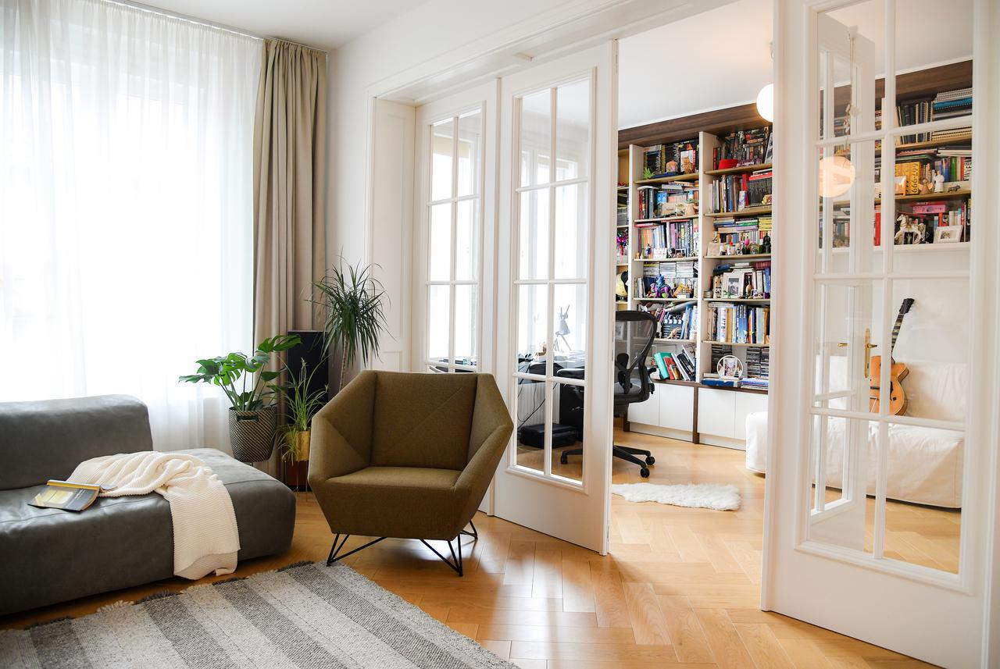

Rast cijena nekretnina u 2025. godini
Tržište nekretnina bilježi kontinuirani rast cijena, posebno u većim urbanim centrima širom regiona.
Tržište nekretnina bilježi kontinuirani rast cijena, posebno u većim urbanim centrima širom regiona.
Veliki broj mladih porodica traži povoljne stanove u predgrađima, što podiže cijene najma i kupovine.
Potražnja za luksuznim stanovima i vilama raste, naročito na obalnim područjima i turističkim destinacijama.
Investitori i vlasnici nekretnina ulažu u adaptacije i renoviranje starijih objekata.
Razvoj novih stambenih naselja prati povećanje infrastrukture i usluga u gradskim zonama.
Projekti novogradnje bilježe rekordne investicije, sa fokusom na moderne i energetski efikasne zgrade.
Sve veći broj kupaca traži vikendice i kuće za odmor u planinskim i ruralnim područjima.
Mnogi projekti revitalizacije doprinose poboljšanju kvaliteta života u centralnim gradskim dijelovima.
Gradovi poput Banje Luke, Mostara i Sarajeva ističu se kao atraktivne destinacije za ulaganje u nekretnine.
Interesovanje za nekretnine na Jadranskoj obali ne prestaje, posebno među stranim kupcima.
Kako odabrati pravu nekretninu i izbjegavati najčešće greške pri kupovini.